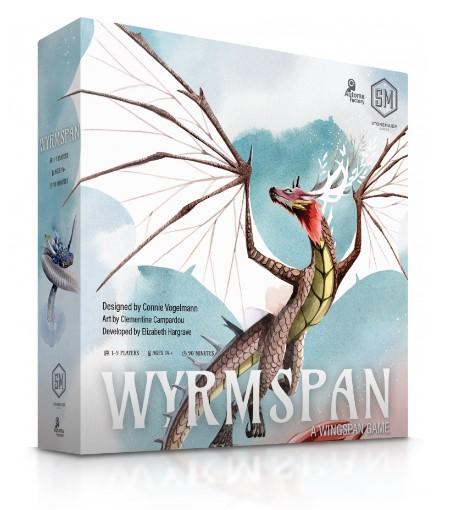

Review - Wyrmspan

"Wyrmspan," designed by Connie Vogelmann and published by Stonemaier Games, stands as a testament to the evolving
landscape of board game design. Drawing inspiration from the critically acclaimed "Wingspan," "Wyrmspan" introduces a
fresh set of mechanics and thematic elements that distinguish it as a standalone game while retaining the beloved
engine-building core that made its predecessor a hit.
Game Components and Aesthetics
The components of "Wyrmspan" are nothing short of impressive. The game includes 183 dragon cards,
75 cave cards, various tokens, player mats, and more. Each component is meticulously designed, reflecting
Stonemaier Games' commitment to quality. The game features illustrations by Clementine Campardou, whose artwork
brings the world of dragons and caves to life with vibrant colors and intricate details.
The game's physical setup is flexible, accommodating up to five players with ease. The inclusion of three smaller
central boards, as opposed to a single large one, allows for a more adaptable gaming experience, suitable for different
table sizes. Additionally, the game offers natural rubber playmats and metal coin upgrades for those looking to
enhance their gaming experience further.
Gameplay and Mechanics
"Wyrmspan" builds on the engine-building mechanics of "Wingspan" but introduces new elements that add
depth and complexity. One of the standout features is the inclusion of cave cards and excavating spaces,
which serve as habitats for the dragons. This addition not only enriches the thematic experience but also
adds a strategic layer to the gameplay.
The game also introduces hatchlings, which activate in three steps and offer significant payoffs,
adding another dimension to the strategic planning. The Guild Track mechanic, a later addition to the
game, addresses resource management issues and enhances the gameplay experience.
Accessibility and Inclusivity
Stonemaier Games has made notable efforts to ensure "Wyrmspan" is accessible to a wider audience. The game
includes features such as large font sizes, double-coded attributes, and minimal visual noise, making it more
inclusive for colorblind and low-vision players. This commitment to accessibility is commendable and sets a
high standard for future board games.
Conclusion
"Wyrmspan" is a remarkable addition to the world of board games, offering a rich, strategic experience that
builds on the success of "Wingspan." Its combination of beautiful components, innovative mechanics, and
commitment to accessibility make it a standout game that will likely remain a favorite among board gamers for
years to come. Whether you're a fan of "Wingspan" or new to Stonemaier Games' offerings, "Wyrmspan" is a game
worth exploring.